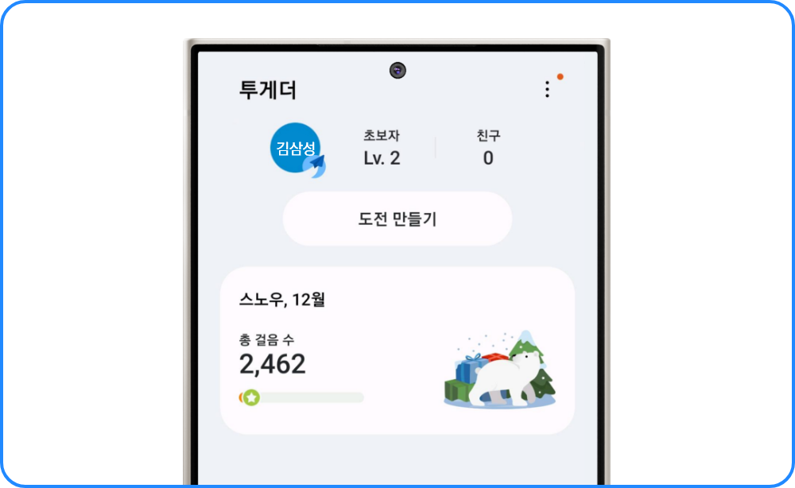

<section class="sec_howto">
    <div class="inner_1440">
        <h3 class="pt_title">참여 방법</h3>
        <div class="pt_howto pt_howto--step1">
            <p class="pt_howto__title pt_howto__title--tag">1 단계</p>
            <p class="pt_howto__cont m_hide">
                모바일 삼성 헬스 앱에서 <br/>챌린지를 시작하세요!
            </p>
            <p class="pt_howto__cont m_show">
                상단의 ‘삼성 헬스 바로가기’ 버튼을 눌러<br/>
                챌린지를 시작하세요!
            </p>
            <div class="img_box pt_howto__img">
                 
                 
            </div>
        </div>
        <div class="pt_howto pt_howto--step2">
            <div class="img_box pt_howto__bg">
                 
                 
            </div>
            <div class="pt_howto__text-box">
                <p class="pt_howto__title pt_howto__title--tag">2 단계</p>
            <p class="pt_howto__cont">
                6단계의 기간과 목표 걸음 수를 확인하고,<br/>각 기간별로 열심히 걸어 목표를 채워요.
            </p>
            <p class="pt_howto__desc pt_howto__desc--01">1월 5일까지 첫 번째 미션을 성공해야<br/>5천원 할인 쿠폰을 받을 수 있어요!</p>
            <p class="pt_howto__desc pt_howto__desc--02">첫 번째 미션을 놓쳤어도<br/>1월 15일까지 10만보를 걸으면<br/>1만원 할인 쿠폰 혜택에 응모할 수 있어요!</p>
            </div>
        </div>
    </div>
</section>